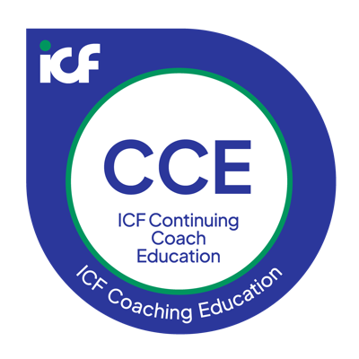
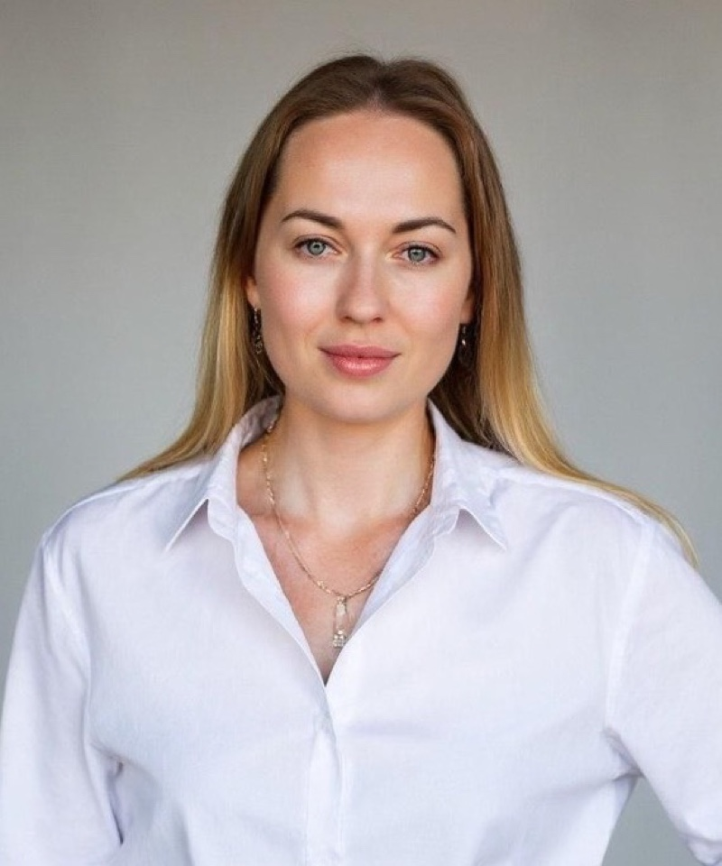

Аккредитация ICF · Continuing Coach Education
Основы менторинга для коучей
Mentor Coaching Essentials · обучение ментор-коучингу
Профессиональная роль ментор-коуча: документы, этика, соглашения, формирующая оценка. 10 часов в записи, в своём темпе.
- Программа аккредитована ICF как Continuing Coach Education: 10 контактных часов, все — Core Competency.
- Полностью асинхронный формат: уроки открываются последовательно, живых встреч нет.
- На русском; английская версия — после запуска русской. Старт — 1 ноября 2026 года.
Старт 1 ноября 2026. Тарифы — от 190 €.

Программа аккредитована ICFContinuing Coach Education, 10 часов

Кандидату на квалификацию ICF нужно не меньше 10 часов ментор-коучинга за три месяца или дольше. С 1 января 2027 года эти часы засчитываются, только если у ментора есть специализация MCS. Путь к ней с учётом прежнего опыта (Credit for Prior Learning) требует 10 часов обучения, менторинга пяти человек за три года и ICF evaluation training. Часы обучения закрывает программа.
Кому подходит
Программа для практикующих коучей, которые работают или собираются работать в роли ментора
Ментор-коучи в практике
Вы уже менторите, но роль собрана из опыта, а не из структуры. Нужна рамка.
Коучи ACC, PCC, MCC
Планируют развивать менторскую практику как отдельное направление.
Кандидаты на MCS
Готовятся к Mentor Coach Specialization, в том числе по пути Credit for Prior Learning.
Преподаватели и faculty
Программ коуч-образования, которые дают студентам развивающую обратную связь.
Тем, кому нужно разграничивать роли
Менторинг, супервизия, ассесмент, терапия, консультирование — разные роли с разной ответственностью.
Формальных пререквизитов нет: квалификация ICF и минимальный стаж для входа не требуются.
Почему это важно сейчас
Что меняется с 1 января 2027 года
ICF ввёл отдельную специализацию для ментор-коучей — Mentor Coach Specialization (MCS). С 1 января 2027 года она становится условием зачёта менторских часов кандидату на квалификацию ICF.
«Beginning January 1, 2027, all ICF credential candidates must work with a mentor coach who has earned the MCS designation».
«С 1 января 2027 года все кандидаты на квалификацию ICF обязаны работать с ментор-коучем, имеющим специализацию MCS».
Источник: coachingfederation.org/blog/introducing-the-mentor-coach-specialization/Для ментора, работающего частно
Часы, которые вы даёте кандидату на квалификацию ICF, после этой даты засчитываются только при наличии MCS. Без специализации ваши менторские часы кандидату не помогут.
Для faculty аккредитованных программ
Менторинг внутри аккредитованных ICF программ уровня Level 1 и Level 2 с той же даты проводят только менторы с MCS. Это касается и нашей академии, и любой другой.
| Путь | Требования |
|---|---|
| Standard | 41+ час обучения, из них не менее 50% в живом (synchronous) формате |
| Credit for Prior Learning (CPL) | не менее 10 часов обучения (в живом или асинхронном формате) + опыт менторинга не менее 5 человек за последние 3 года + прохождение ICF evaluation training |
Где в этой схеме наша программа. Она сделана под путь CPL и закрывает его образовательную часть: 10 часов обучения в асинхронном формате.
Программа не выдаёт MCS и не является заявкой на MCS. Она даёт обучение — то есть один из трёх элементов пути Credit for Prior Learning. Опыт менторинга минимум пяти человек за три года и прохождение ICF evaluation training вы собираете отдельно, заявку подаёте в ICF сами.
Опыт менторинга ICF принимает в одной из двух форм: пять ваших менти за последние три года получили квалификацию ICF или аккредитованный ICF провайдер подтверждает письмом, что за тот же срок вы менторили не меньше пяти его студентов. Условия при подаче сверяйте с актуальным описанием MCS на сайте ICF: coachingfederation.org — Mentor Coach Specialization.
Стоимость самой заявки MCS в ICF (оплачивается напрямую ICF, в стоимость программы не входит): до марта 2027 — $50 для членов ICF и $125 для остальных; с апреля 2027 — $125 и $200 соответственно.
Результат
К концу программы вы сможете
- Объяснять, что такое менторинг в рамке ICF — как описанную роль, а не как обмен опытом, — и какое место он занимает в развитии профессии.
- Отделять менторинг от коучинга, супервизии, ассесмента, терапии и бизнес-консультирования — и удерживать эту границу в работе.
- Ориентироваться в документах ICF, которые ментору нужны ежедневно: Кодекс этики, Core Competencies 2025, Competency Glossary, PCC Markers.
- Описывать шесть компетенций ментор-коуча ICF и логику модели, в которую они собраны.
- Видеть этические риски менторинга заранее: двойные роли, конфиденциальность, хранение записей, границы с терапией и консультированием.
- Заключать соглашение о менторинге — и на весь процесс, и на отдельную сессию — и управлять процессом по нему.
- Проводить формирующую оценку и давать развивающую обратную связь без вердикта и без осуждения.
- Различать фокус работы с менти, который идёт к ACC, и с менти, который идёт к PCC, — по Minimum Skills Requirements и PCC Markers.
- Применять всё это к практическим кейсам, включая групповой менторинг и сложные ситуации в группе.
Программа
10 уроков
Итого: 10.0 часов, все — Core Competency1Введение: зачем ментору отдельная подготовкаIntroduction to the Program and the Professional Role of the Mentor Coach
Место менторинга в развитии профессии. Почему роль ментора требует отдельной подготовки. Структура программы и её границы: что курс даёт, а что нет.
2Документы ICF, которые нужны менторуICF Documents Every Mentor Coach Needs
Кодекс этики ICF и его ценности, включая акценты на технологиях и ИИ, конфиденциальность и хранение записей. Core Competencies 2025, Competency Glossary. PCC Markers как язык наблюдаемого поведения, а не чек-лист для галочек.
3Что такое менторинг и чем он не являетсяWhat Mentor Coaching Is and What It Is Not
Определение менторинга. Отличия от супервизии, терапии, бизнес-консультирования и ассесмента. Типичные ошибки начинающих менторов.
4Этические границы роли ментораEthical Boundaries of the Mentor Coach Role
Кодекс этики применительно к менторингу. Двойные роли. Standard 3.7 — раскрытие смены роли. Конфиденциальность, хранение и уничтожение материалов. Граница с терапией и консультированием.
5Компетенции ментор-коуча ICFICF Mentor Coaching Competencies
Шесть компетенций ментор-коуча в четырёх разделах модели. Видео 1 — основания роли: этика и соглашения (компетенции 1–2). Видео 2 — управление процессом менторинга (3). Видео 3 — развитие клиента и групповой менторинг (4–6).
6Соглашение и управление процессомThe Mentoring Agreement and Managing the Mentoring Process
Соглашение на весь процесс и на отдельную сессию. Параметры отношений. Цель менти и квалификация, к которой он идёт. Критерии успеха. Ответственность сторон.
7Формирующая оценка и развитие навыков ментиFormative Assessment and Developing the Mentee's Skills
Формирующая и итоговая оценка: в чём разница. Почему ментор не выносит вердикт «сдал / не сдал». Развивающая обратная связь без осуждения. Поддержка собственного стиля коуча.
8Уровни ACC и PCC как ориентиры развитияACC and PCC Levels as Development Benchmarks
ACC — базовые навыки, PCC — зрелое партнёрство. Minimum Skills Requirements и PCC Markers. Почему уровни это ориентир развития, а не шкала оценки в руках ментора.
9Групповой менторинг и сложные ситуацииGroup Mentor Coaching and Challenging Situations
Групповой и индивидуальный формат. Безопасность и инклюзия в группе. Групповая динамика. Разбор сложных ситуаций.
10Итоговая интеграция и тестFinal Integration and Testing
Сборка логики курса. Итоговый тест: 20 вопросов, проходной балл 80%.
Формат
Как проходит обучение
Асинхронно, без расписания
Живых встреч и вебинаров нет. Вы проходите программу в своём темпе, когда вам удобно.
Уроки открываются последовательно
Следующий становится доступен после предыдущего.
Основной формат — текст
Плюс три видео по 20 минут в уроке о компетенциях ментор-коуча.
Кейсы с разборами
Этические ситуации, соглашения, сравнение уровней ACC и PCC, групповая динамика — на конкретных примерах с решениями.
Самопроверка и итоговый тест
20 вопросов с множественным выбором, проходной балл 80% (16 из 20), проверка автоматическая, повторные попытки разрешены.
Сертификат
Выдаётся после прохождения всех десяти уроков, работы с кейсами и сдачи теста на 80% и выше — 10 часов CCE категории Core Competency.
Материал для менторинга. Разбор сессии менти обычно идёт по записи и дословному транскрипту: реплики по ролям, таймкоды, паузы и отдельная колонка для пометок ментора. Как такой транскрипт выглядит, что в нём проверять и где бесплатно расшифровать запись в этот формат, разобрано в гайде «Транскрибация коуч-сессии».
Документ
Mentor Coaching Essentials: аккредитация ICF, Continuing Coach Education
Программа аккредитована ICF как Continuing Coach Education (CCE), объём — 10.00 контактных часов, все часы отнесены к категории Core Competency. Сертификат аккредитации выдан 01.10.2026, действует по 31.10.2027.
- Продление квалификации ICF. Часы Core Competency засчитываются как непрерывное образование при продлении вашей квалификации в ICF.
- Образовательная часть пути Credit for Prior Learning к специализации MCS: путь CPL требует не менее 10 часов обучения — программа их закрывает.
Ведущая и академия
Все десять уроков ведёт Ольга Вильковская
Ольга Вильковская
Коуч PCC ICF · ментор-коуч · супервизор
С октября 2026 года руководит Комитетом по научному обоснованию и методологии коучинга Союза развития потенциала человека. Президент Клуба коучей НИУ ВШЭ, в университетской программе «Коучинг в организации» ведёт теорию, менторит и супервизирует. Эксперт ФПКиН. В академии работает ментором и супервизором со студентами программ с аккредитацией ICF Level 1 и Level 2. Разработала методологию и написала все десять уроков этой программы, автор серии книг «Путь коуча».
- «Магия и наука коучинга» (The Magic & Science of Coaching — Essence Professional Certification) — аккредитация ICF, Level 1, 75 часов.
- «Путь Алхимика» (The Alchemist's Path — Advanced Coach Certification) — аккредитация ICF, Level 2, 126 часов.
Тарифы и запись
Выберите формат участия
Ментор
190 € за всю программу
- Все 10 уроков программы в записи, 10 контактных часов
- Итоговый тест и сертификат об аккредитации ICF (CCE, 10 часов Core Competency)
- Доступ в закрытый чат менторов — профессиональное сообщество коучей уровня PCC/MCC (Telegram)
- Доступ в общий чат выпускников академии (не только менторский)
- Место в базе выпускников академии на платформе iakuban.com
Ментор + сессия
350 € за всю программу
Всё из тарифа «Ментор», плюс:
- Ориентирующая сессия с ментором — индивидуальная часовая сессия с ментором уровня PCC ICF: разбор вопросов по движению в профессии ментор-коуча, куда двигаться дальше, ответы на любые вопросы участника
Язык: на русском; английская версия — после запуска русской.
Срок доступа к материалам: видео и платформа — 12 месяцев с даты покупки. Сертификат и скачиваемые чек-листы (PDF) — бессрочно.
Старт: 1 ноября 2026 года.
Вопросы до оплаты — напишите нам: info@iakuban.com, +34 614 206 809.
Частые вопросы
Даёт ли программа MCS?
Нет. MCS — это специализация, которую присваивает ICF по вашей заявке. Программа закрывает образовательное требование пути Credit for Prior Learning: не менее 10 часов обучения. Опыт менторинга минимум пяти человек за три года и прохождение ICF evaluation training вы собираете отдельно, заявку подаёте сами.
Сколько менторских часов нужно для квалификации ICF?
Для заявки на ACC или PCC нужно не меньше 10 часов ментор-коучинга в течение трёх месяцев или дольше, из них минимум 3 часа индивидуально. Выпускники аккредитованных ICF программ уровня Level 1 и Level 2 проходят эти часы внутри программы. С 1 января 2027 года засчитываются только часы с ментор-коучем, у которого есть MCS.
Кто сможет работать ментор-коучем для кандидатов ICF с 2027 года?
Ментор-коуч со специализацией Mentor Coach Specialization (MCS). Её присваивает ICF по заявке. Есть два пути: Standard (41 час обучения и больше, не меньше половины в живом формате) и Credit for Prior Learning для тех, у кого уже есть опыт менторинга. Наша программа даёт обучение для второго пути, но не саму специализацию.
Подходит ли программа, если у меня уже есть опыт менторинга?
Да, программа сделана под путь Credit for Prior Learning. Он требует не меньше 10 часов обучения, прохождения ICF evaluation training и опыта менторинга за последние три года: пять ваших менти получили квалификацию ICF или аккредитованный ICF провайдер подтверждает письмом, что вы менторили не меньше пяти его студентов. Программа закрывает часы обучения, остальное вы собираете сами.
Засчитаются ли эти 10 часов при продлении квалификации PCC?
Да. Все 10 часов программы отнесены к категории Core Competency и засчитываются как непрерывное образование при продлении квалификации ICF.
Нужна ли квалификация ACC или PCC, чтобы прийти на программу?
Нет. Формальных пререквизитов нет: квалификация ICF и минимальный стаж не требуются. Программа рассчитана на практикующих коучей, и материал предполагает, что вы уже работаете с клиентами.
Сколько времени будет доступ к материалам?
Видео и платформа — 12 месяцев с даты покупки. Сертификат и скачиваемые чек-листы (PDF) остаются у вас бессрочно.
Будет ли версия на английском?
Да, английская версия выйдет после запуска русской. Точных сроков пока нет.
Есть ли живые встречи, вебинары, групповые сессии?
Нет. Программа полностью асинхронная: все 10 часов — материалы в записи. Синхронных часов в программе нет.
Что будет, если я не сдам тест?
Повторные попытки разрешены. Тест состоит из 20 вопросов с множественным выбором, проходной балл — 80%, то есть 16 правильных ответов из 20. Проверка автоматическая, результат видно сразу.
Выдаётся ли сертификат?
Да. Для его получения нужно пройти все десять уроков, проработать кейсы и сдать итоговый тест на 80% и выше. В сертификате указаны 10 часов Continuing Coach Education категории Core Competency.
Чем менторинг отличается от супервизии?
Менторинг — обратная связь о навыках относительно компетенций ICF. Супервизия — работа с самим коучем и его реакциями в практике. Разграничению посвящён урок 3.
Подходит ли программа преподавателям программ коуч-образования?
Да, это одна из целевых аудиторий. С 1 января 2027 года менторинг внутри аккредитованных ICF программ уровня Level 1 и Level 2 проводят только менторы с MCS, поэтому faculty программ проходит тот же путь, что и частные менторы.
В чём разница между тарифами?
«Ментор» (190 €) даёт все 10 уроков, сертификат, доступ в закрытый чат менторов, доступ в общий чат выпускников академии и место в базе выпускников. «Ментор + сессия» (350 €) добавляет к этому индивидуальную часовую ориентирующую сессию с ментором уровня PCC ICF — разбор вашей ситуации и вопросов о движении в профессии.
Информация о программе
| Организация | Iakuban Coaching Academy S.L. |
|---|---|
| Название программы | Mentor Coaching Essentials · Основы менторинга для коучей |
| Аккредитация | Программа аккредитована ICF как Continuing Coach Education (CCE) |
| Контактные часы | 10.00, все — категория Core Competency (0 часов Resource Development) |
| Период действия аккредитации | сертификат выдан 01.10.2026, действует по 31.10.2027 |
| Старт программы | 1 ноября 2026 года |
| Формат обучения (delivery method) | полностью асинхронный, самостоятельный темп, собственная платформа академии; синхронных (живых) часов нет |
| Язык | на русском; английская версия — после запуска русской |
| Локация | онлайн |
| Целевая аудитория | практикующие ментор-коучи; коучи с квалификацией ACC, PCC, MCC, развивающие менторскую практику; коучи, готовящиеся к Mentor Coach Specialization, включая путь Credit for Prior Learning; faculty программ коуч-образования; специалисты, которым нужно разграничивать менторинг, супервизию, ассесмент, терапию и консультирование |
| Пререквизиты | формальных пререквизитов нет |
| Преподаватель | Olga Vilkovskaya, PCC — все 10 уроков |
| Оценка | итоговый тест: 20 вопросов, проходной балл 80%, повторные попытки разрешены |
| Стоимость | 190 € (тариф «Ментор») / 350 € (тариф «Ментор + сессия») |
| Контакты | info@iakuban.com, +34 614 206 809 |
| Адрес | Avda Pau Casals 4 A, Prats de Lluçanès, Barcelona 08513, Spain |
| Сайт | iakuban.com |